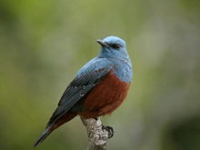
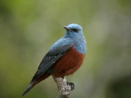

| Blue Rock Thrush | |
|---|---|
|  | |
| Male M. solitarius philippensis | |
| Conservation status | |
| Binomial name | |
| Monticola solitarius (Linnaeus, 1758, Oriente [ =Italy ]) |
| Blue Rock Thrush | |
|---|---|
|  | |
| Male M. solitarius philippensis | |
| Conservation status | |
| Binomial name | |
| Monticola solitarius (Linnaeus, 1758, Oriente [ =Italy ]) |
The Blue Rock Thrush or Blue Rock-Thrush (Monticola solitarius) is a species of chat. This thrush-like Old World flycatcher was formerly placed in the family Turdidae.
This species breeds in southern Europe and northwest Africa, and from central Asia to northern China and Malaysia.
The European, north African and southeast Asian birds are mainly resident, apart from altitudinal movements. Other Asian populations are more migratory, wintering in sub-Saharan Africa, India and southeast Asia. This bird is a very uncommon visitor to northern and western Europe.
Blue Rock Thrush breeds in open mountainous areas, usually higher than the breeding zone of the related Rufous-tailed Rock Thrush. It nests in rock cavities and walls, and usually lays 3-5 eggs. An omnivore, the Blue Rock Thrush eats a wide variety of insects and small reptiles in addition to berries and seeds.
This is a starling-sized bird, 21–23 cm in length with a long slim bill. The summer male is unmistakable, with all blue-grey plumage apart from its darker wings. Females and immatures are much less striking, with dark brown upperparts, and paler brown scaly underparts. Both sexes lack the reddish outer tail feathers of Rock Thrush.
The male Blue Rock Thrush sings a clear, melodious call that is similar to, but louder than the call of the Rock Thrush.
The Blue Rock Thrush is Malta's national bird and is shown on the Lm 1 coins that was part of the previous currency of the country.

{kind=link}